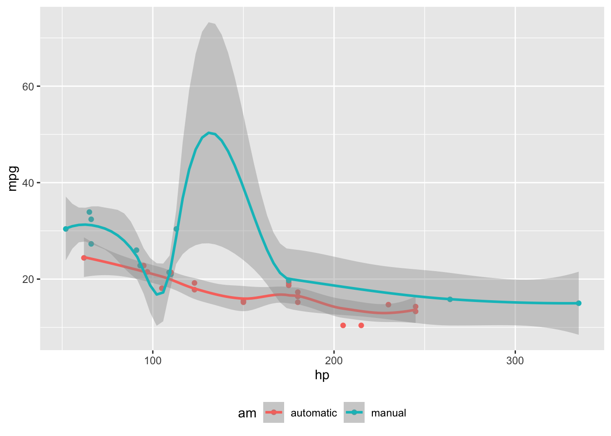

Nifty Features with Quarto
Callouts
Note
Note that there are five types of callouts, including: note, warning, important, tip, and caution.
Tip With Caption
This is an example of a callout with a caption.
Expand To Learn About Collapse
This is an example of a ‘folded’ caution callout that can be expanded by the user. You can use collapse="true" to collapse it by default or collapse="false" to make a collapsible callout that is expanded by default.
Appearance
Pay Attention
Using callouts is an effective way to highlight content that your reader give special consideration or attention. You can set this globally callout-appearance: simple.
Icon
Margin Figures
Code
library(ggplot2)
mtcars2 <- mtcars
mtcars2$am <- factor(
mtcars$am, labels = c('automatic', 'manual')
)
ggplot(mtcars2, aes(hp, mpg, color = am)) +
geom_point() + geom_smooth(formula = y ~ x, method = "loess") +
theme(legend.position = 'bottom')
Margin Tables
Code
knitr::kable(
mtcars[1:3, 1:3]
)| mpg | cyl | disp | |
|---|---|---|---|
| Mazda RX4 | 21.0 | 6 | 160 |
| Mazda RX4 Wag | 21.0 | 6 | 160 |
| Datsun 710 | 22.8 | 4 | 108 |
Other Content
We know from the first fundamental theorem of calculus that for \(x\) in \([a, b]\):
\[\frac{d}{dx}\left( \int_{a}^{x} f(u)\,du\right)=f(x).\]